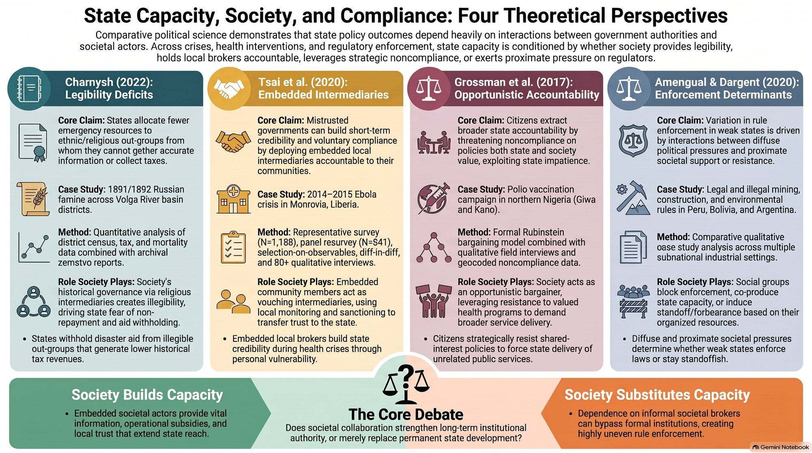
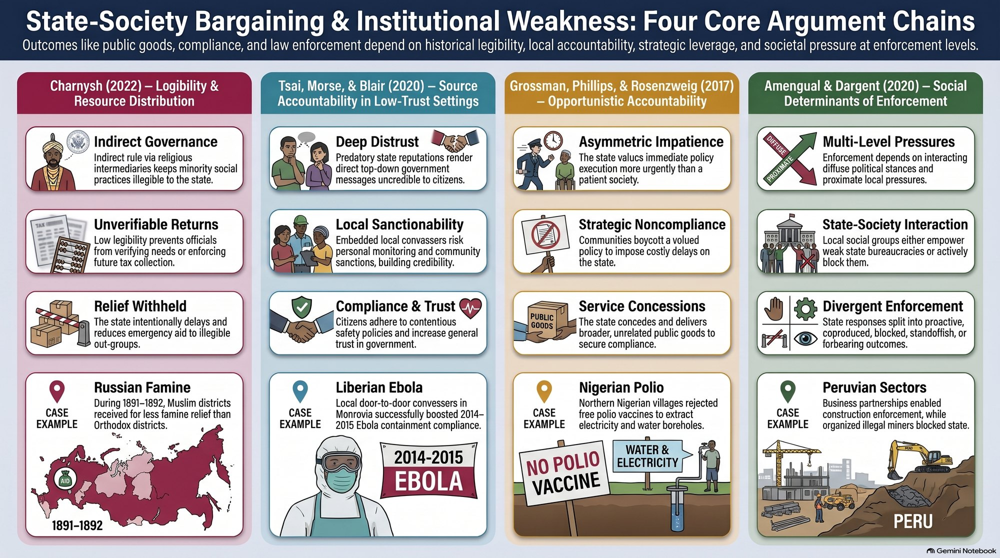
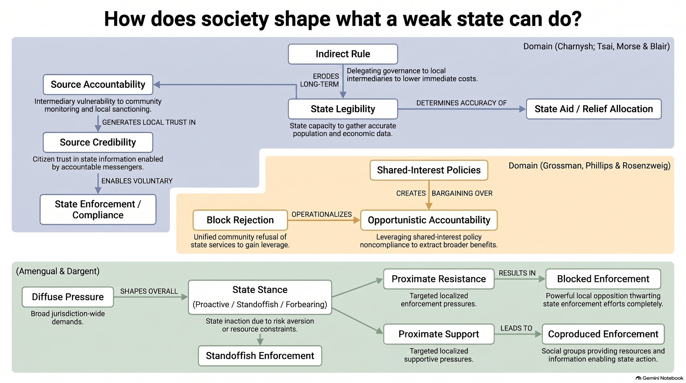

The Classroom · Weak Institutions · Class 6 · 12 Nov 2026
Society's Role in Building State Capacity
What can society do for a state that can barely see or reach it? Charnysh shows that famine relief followed legibility, Tsai, Morse and Blair show that trusted local canvassers made Liberia's Ebola campaign credible, Grossman and colleagues show communities refusing the polio vaccine to bargain for other services, and Amengual and Dargent show social groups blocking or coproducing enforcement.
1 At a glance 30 seconds
Key questions
- Why do weak states treat some groups worse than others, even without electoral motives or prejudice?
- How can a distrusted government get voluntary compliance in a crisis?
- Can society gain leverage over the state on a policy both sides want?
- When does social pressure produce enforcement, and when does it block it?
Key concepts
Legibility and indirect rule
Groups governed through intermediaries are less visible to the state, so officials know and extract less from them. — Charnysh (2022)
Informational capacity
What the state knows about its population; measured by age heaping in census data. — Charnysh (2022)
Source accountability
Messages are credible when the messenger can be monitored and sanctioned by the audience, e.g. local canvassers. — Tsai, Morse & Blair (2020)
Opportunistic accountability
Society withholds cooperation on a shared-interest policy to extract other goods, if it is more patient and values the policy less. — Grossman, Phillips & Rosenzweig (2017)
Block rejection
Whole communities refusing polio vaccination as a bargaining tactic. — Grossman, Phillips & Rosenzweig (2017)
Proactive, standoffish, forbearance
Three state stances toward enforcement, shaped by diffuse social pressure for or against it. — Amengual & Dargent (2020)
Coproduced enforcement
Allied social groups supply information and operational support the state lacks. — Amengual & Dargent (2020)
Tap a concept for its definition.
What you get out of it
- Capacity is relational: the same state is strong toward some groups and weak toward others.
- Intermediaries cut both ways: indirect rule blinds the state (Charnysh), while accountable local messengers make it credible (Tsai et al.).
- Noncompliance can be a bargaining strategy, not only a failure of capacity or legitimacy.
- Enforcement is a political outcome: low capacity plus no social demand gives standoffish non-enforcement, not anarchy.
Cases and evidence
- 1891/92 Russian famine Charnysh (2022)
Districts with more Muslims saw higher mortality and later, smaller relief; Muslims were ruled via religious intermediaries. - Ebola door-to-door campaign, Liberia 2014–15 Tsai, Morse & Blair (2020)
Visited Monrovia residents were 9 pts more trusting of the Ministry of Health, 15 pts more supportive of control policies, 10 pts less likely to break rules. - Polio vaccination, northern Nigeria (Kano) Grossman, Phillips & Rosenzweig (2017)
Communities stage block rejection to demand electricity, roads or clinics; builds on the 2003 vaccine boycott. - Mining, construction and environmental rules Amengual & Dargent (2020)
Gold mining in Peru and Bolivia, construction in Peru, brickmakers in Córdoba and environmental rules in Santa Fe, Argentina.
The readings
| Volha Charnysh (2022) | Explaining Out-Group Bias in Weak States: Religion and Legibility in the 1891/1892 Russian Famine · World Politics 74(2): 205–248 Discrimination in weak states can follow from illegibility: the state helps least those it cannot see. |
| Lily L. Tsai, Benjamin S. Morse & Robert A. Blair (2020) | Building Credibility and Cooperation in Low-Trust Settings · Comparative Political Studies 53(10–11): 1582–1618 Accountable local messengers let a distrusted government win compliance during Ebola. |
| Shelby Grossman, Jonathan Phillips & Leah R. Rosenzweig (2017) | Opportunistic Accountability: State–Society Bargaining Over Shared Interests · Comparative Political Studies Patient communities can hold a shared-interest policy hostage to win other services. |
| Matthew Amengual & Eduardo Dargent (2020) | The Social Determinants of Enforcement · In Brinks, Levitsky & Murillo (eds.), CUP, 161–182 Social pressure, not capacity alone, decides whether weak states enforce, ignore or coproduce enforcement. |
Where this fits in the course
Tuesday's class treated state capacity as something the state has or lacks: Herbst's taxes, Cole's bureaucracy, Scott's legibility. This week turns to society: who the state can see, whom citizens trust, and which groups block or help enforcement. It sets up 17 Nov (discretion of street-level officials), 19 Nov (non-compliance and legitimacy) and 26 Nov (forbearance), where enforcement becomes a political choice.
- 1Recognizing Institutions
- 2The Strength of Institutions
- 3Institutional Weakness and Democracy
- 4Institutional Weakness and Development
- 5State Capacity
- 6Society's Role in Building State Capacity
- 7Delegation, Discretion, Ambiguity and Agency
- 8Non-Compliance
- 9Informal Institutions
- 10Forbearance
- 11Institutional Ambition
- 12Institutional Stability and Fragility
- 13Exogenous Institutional Strengthening
- 14Endogenous Institutional Strengthening
- 15In-class exam
2 Listen and look
The podcasts are moving to faster hosting and will be back here shortly.



3 Test your understanding
4 quick questions, then 2 to answer in your own words. Nothing is saved or sent.
What is Charnysh's third explanation for out-group bias, beyond electoral incentives and prejudice?
Indirect rule through religious intermediaries left the state with poor information about Muslim communities, so relief was withheld where repayment could not be monitored.
Why were canvassers in Liberia's Ebola campaign credible, according to Tsai, Morse and Blair?
Source accountability: being embedded in the community made the messengers answerable to their audience.
In Grossman et al.'s bargaining model, society gains leverage over a shared-interest policy when it…
The less-eager, more-patient side can credibly delay, so the state concedes other goods (e.g. services in exchange for vaccination).
In Amengual and Dargent, what follows from limited capacity plus no diffuse opposition to enforcement?
Without social demand, a resource-poor state simply does not bother: the standoffish outcome.
Compare the role of intermediaries in Charnysh and in Tsai, Morse and Blair. Why do they weaken the state in one case and strengthen it in the other?
In Charnysh, religious intermediaries stood between state and community, keeping information from officials and making Muslims illegible. In Liberia, local canvassers were accountable to both the community and the campaign, so they carried credible information in both directions. What matters is whose agent the intermediary is and whether it can be monitored.
Using this week's readings, argue whether society builds state capacity or substitutes for it.
Coproduction (Amengual & Dargent) and accountable messengers (Tsai et al.) show society lending capacity the state lacks, which can build trust and information over time. But Grossman et al. and Charnysh show society can also keep the state dependent or blind. A good answer distinguishes short-run substitution from long-run capacity-building.
Podcasts and infographics are generated with Google NotebookLM from the course readings; the brief and quiz are drafted with Claude from the readings and syllabus. Everything is checked and curated by me.